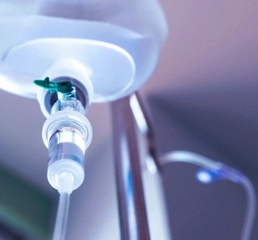

+380(97) 369 76
65
+380(97) 369 76
65Капельница от алкоголя в Харькове
Благодаря инновационным методам и профессиональным врачам вылечиваем алкогольную зависимость во всех случаях
Работаем в Одессе, Киеве, Львове, Харькове, Днепре, Запорожье


Бесплатная консультация, работаем круглосуточно 24/7
Благодаря инновационным методам и профессиональным врачам вылечиваем алкогольную зависимость во всех случаях
Работаем в Одессе, Киеве, Львове, Харькове, Днепре, Запорожье
**Капельница от алкоголя **- это эффективный метод лечения алкогольной зависимости, направленный на быстрое восстановление и выведение всех токсинов из организма с последующим полным восстановлением пациента. Нужно понимать что алкоголь нарушает адекватную работу организма, дает сильнейшую нагрузку на сердце, печень , почки а так же нервную систему. Капельница от алкоголя помогает полностью компенсировать любое последствие злоупотребления алкоголем, вывести из запойного состояния а так же полностью облегчить самочувствие больного.
Прокапаться от алкоголя - это собирательный термин обозначающий поставить капельницу с детоксикационным раствором для снятия алкогольной интоксикации. Прокапаться от алкоголя можно в тех случаях когда пациент употреблял некачественный алкоголь либо же доза спиртных напитков было слишком высокая. Если у пациента имеется хроническая интоксикация или состояния тяжелого запоя поставить капельницу от алкоголя будет мало , такой пациент требует длительного медикаментозного лечения , кодирования от алкоголя и психотерапии.
Что бы прокапать от алкоголя в Харькове вам нужно обратиться к квалифицированному врачу наркологу , он проведет первичную диагностику , оценку тяжести состояния пациента и поставит капельницу от алкоголя для снятия любой тяжести интоксикации. Врач нарколог прокапывает от алкоголя с помощью препаратов которые обладают сильными антиоксидантными и детоксикационными свойствами, витаминами группы В и С , глюкозой, а так же аминокислотами которые восстановят организм.
Состав капельницы от алкоголя всегда разный , но к основным препаратам можно отнести:
Капельницы от алкоголя должны быть общего спектра действия и направленны на восстановление сердечно-сосудистой системы, нервной системы , а так же печени, желудка и поджелудочной. Капельницы от алкоголя всегда понижают уровень аммиака в крови одновременно разжижая кровь (гемодилюция) , тем самым моментально облегчают состояние вызванное сильной острой или хронической интоксикации.
Капельницу от алкоголя можно ставить не раньше чем через один два часа после последнего употребления больным спиртного напитка. Преимущество капельницы от алкоголя это ее высокая и быстрая эффективность. Симптомы сильнейшей интоксикации проходят за один - два часа от момента постановки капельницы от алкоголя. Капельница после алкоголя проводится под контролем врача нарколога и может длиться от полутора до двух часов.
Капельница от пивного похмелья является специфической медицинской процедурой которая отличается от лечения интоксикации вызванной крепкими спиртными напитками. Капельница от пивного алкоголизма и лечение пивного алкоголизма отличается тем что интоксикация происходит в следствии тяжелых вспомогательных веществ которые входят в состав хмельного напитка. Из за длительного злоупотребления пивом в первую очередь страдает сердечно-сосудистая система и почки. В таких случаях врач нарколог использует большое количество сердечных препаратов которые поддержат адекватную работу сосудов и сердца.
В Городе Харьков цена на капельницу от алкоголя начинается от 1499грн и может меняться в зависимости от длительности и тяжести алкогольной интоксикации.
Лечение алкоголизма От 1499 грн
Вывод из запоя От 1499 грн
Вывод из запоя на дому От 1699 грн
Капельница от алкоголя От 1499 грн
Капельница от алкоголя на дому От 1699 грн
Лечение пивного алкоголизма От 1499 грн
Лечение женского алкоголизма От 1499 грн
Кодирование от алкоголизма От 3999 грн
Кодирование уколом От 3999 грн
Подшивка от алкоголя От 9999 грн
Кодирование по методу Довженко От 14999 грн
После капельницы от алкоголя организм проходит через Т этапов восстановления.
В городе Харьков капельницу от алкоголя можно поставить обратившись в наркологический центр или вызвать врача нарколога на дом. Дежурный врач вас проконсультирует , проведет первичную диагностику состояния больного а так же прокапает от алкоголя. Капельницу от алкоголя могут поставить и на дому если интоксикация не тяжелая а длительность употребления менее двух недель. Капельницу от алкоголя на дому ставит только квалифицированный врач нарколог или реаниматолог.
Что бы поставить капельницу от алкоголя в Харькове вам нужно позвонить нам по номеру 050-021-69-57.
Капельница от похмелья - это врачебная инвазивная манипуляция которую проводит врач-нарколог в случаях недлительного злоупотребления спиртным , обычно срок приема алкоголя не превышает одного-двух дней. Капельница от похмелья имеет ряд схожих препаратов по сравнению с капельницей от запоя, он отличается в выборе детоксикационных растворов а так же их объемов. Капельница от похмелья направленна на быстрое снятие алкогольного отравления, имеет комбинированный антиоксидантный состав и высокую эффективность в лечении похмелья.
Что бы выйти из запоя без капельницы мы рекомендуем принимать:
Стоит помнить что любая алкогольная интоксикация несет за собой тяжелые последствия для здоровья и жизни пациента , не стоит заниматься самолечением при возможности получить какую либо врачебную помощь - обращайтесь за ней.
Что бы вызвать врача-нарколога позвоните по номеру 050-021-69-57.
Анонимно

"Ну в хлопців просто золоті руки й світла голова, мене капали Олексій та Владислав, буквально за декілька сеансів я наче заново народився, до цього пив більше 3х тижнів, не міг зупинитись, дуже радий що знайшов саме цих спеціалістів, всім рекомендую"
Анонимно
"В течение нескольких лет я злоупотреблял алкоголь, что привело к увольнению с работы и вызвало у меня мысли о суициде. Понимая, что такой образ жизни неприемлем, я обратился за помощью в клинику "Амбрела". Здесь я смог преодолеть свою зависимость от спиртного благодаря заботливым и опытным врачам, а также эффективной системе лечения. Спустя более года я полностью избавился от желания употреблять алкоголь, и теперь моя жизнь вернулась в норму. Я даже не приближаюсь к спиртному! Благодарю врачей клиники "Амбрела" за их помощь и заботу."
Анонимно
"Я обращался за помощью в различные клиники, пытаясь избавиться от своей зависимости от алкоголя, но без особых успехов. Никак не мог справиться с желанием прибегнуть к бутылке, пока друг не посоветовал мне обратиться в центр "Амбрелла". Я записался на прием и был поражен заботливым отношением к пациентам. Уже прошло два года, и теперь я смотрю на алкоголь с абсолютной равнодушием, активно занимаюсь спортом и улучшил отношения в семье. Благодаря центру "Амбрелла" моя жизнь была спасена от алкогольной зависимости!"
Анонимно

"Хочу выразить свою благодарность врачам из центра алкоголизма "Амбрела" за то, что они буквально спасли мою жизнь. В течение последнего года я сильно увлекался питьем, и все это привело к катастрофическим последствиям. Хотя я ходил на терапевтические сеансы, но безрезультатно. Тогда я нашел адрес клиники "Амбрела" в интернете, изучил отзывы и информацию о центре, и записался на прием. Там мне сразу предложили методику лечения, которая помогла не только справиться с физической ломкой, но и психической зависимостью от алкоголя. Не буду распространяться, скажу только одно - после пребывания в этой клинике я стал другим человеком, и навсегда забыл, что такое привкус алкоголя. Больше меня не тянет на это! Я искренне верю, что в центре "Амбрела" трудятся настоящие целители душ!"
Анонимно
"После сложного развода мой сын начал подавлять свою обиду и горе употреблением алкоголя. Он старался скрывать это от меня, но я, как мать, почувствовала, что что-то не так. В конечном итоге, ситуация стала критической. Моя знакомая посоветовала мне обратиться в клинику "Амбрела". Я была приятно удивлена их работой! Они помогли сыну преодолеть очередной период злоупотребления алкоголем, и с тех пор прошел уже более года, и он совсем не пьет."
Анонимно
"Благодаря вашей помощи, моя семья была спасена. Я с трудом уговорила мужа начать лечение, и последний каплей был пьяное ДТП. К счастью, в аварии никто не пострадал, но это был для него сигнал к действию. Он наконец согласился пройти курс лечения на дому, в стационар не хотел ложиться. Лечение было трудным, и были моменты, когда срыв был настолько близок, но благодаря вашему центру Амбрелла мы справились с этим."
Анонимно
"Для меня эта клиника стала настоящим спасением! Долгое время я упорно отказывался от лечения, уверен был, что со мной все в порядке. Но к счастью, семья уговорила меня попробовать. И сегодня я чувствую себя невероятно счастливым, осознавая, что мне абсолютно не нужен алкоголь. Огромное спасибо за помощь и поддержку, которые я получил здесь! Я благодарен вам за новую возможность жить полноценной и счастливой жизнью!"
Анонимно
"Выражаю благодарность ребятам, которые оказали мне помощь и не отвернулись. Уже 10 месяцев я остаюсь чистой. Благодарю за то, что помогли найти новый путь в моей жизни."
Приезд в течении 60 минут от момента поступления заявки
Наши филиалы есть во всех больших городах Украины.
Мы оказываем профессиональную доказательную медицинскую помощь. Гарантией является наше имя.
Номер телефона:
+380 (97) 369 76 65
+380 (50) 021 69 57
Адрес главного офиса: г. Одесса Армейская 18/1
Офис вашего города нужно уточнить
Работаем в: Одессе, Киеве, Львове, Харькове, Днепре,
Запорожье
Telegram: t.me/umbrellaplus
График работы: Круглосуточно